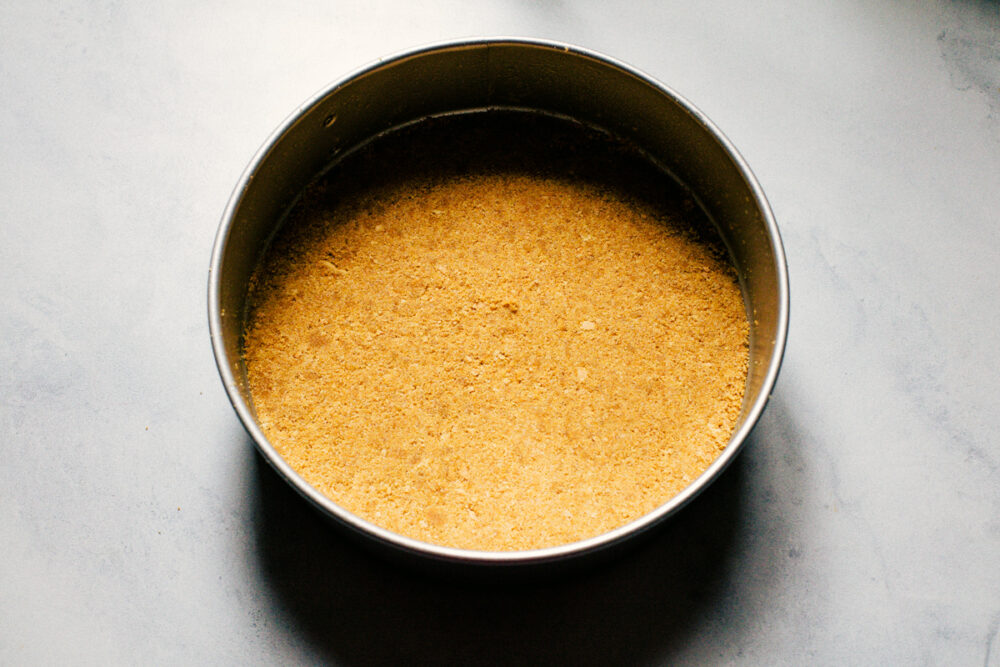
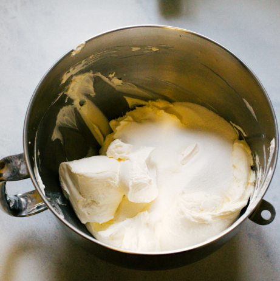
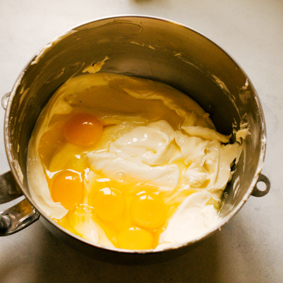
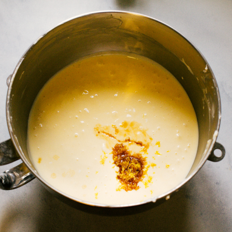
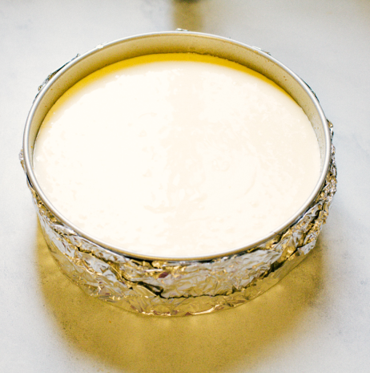
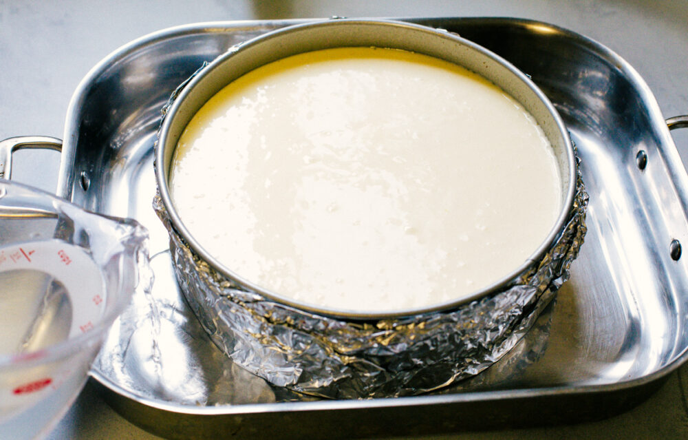

Ingredients
- Graham cracker crumbs – from 12 crackers
- White sugar – 2 tbsp (crust) + 1 cup (filling)
- Butter – 5 tbsp, melted
- Salt – a pinch
- Cream cheese – 2 lbs (4×8oz), softened
- Sour cream – 1 cup
- Eggs – 4, room temperature
- Vanilla extract – 1 tsp
- Lemon zest – 1 tsp
Step Ingredients
- Graham cracker crumbs – from 12 crackers
- White sugar – 2 tbsp
- Butter – 5 tbsp, melted
- Salt – a pinch
Step 1: Make the Crust
- Preheat oven to 325°F (160°C).
- Mix graham cracker crumbs, sugar, butter, and salt.
- Press into springform pan, bake for 10 minutes, cool completely.

Step Ingredients
- Cream cheese – 2 lbs, softened
Step 2: Beat Cream Cheese
Beat softened cream cheese until smooth and creamy.

Step Ingredients
- Eggs – 4, room temperature
Step 3: Add Eggs
Add eggs one at a time, mixing on low speed until just combined.

Step Ingredients
- White sugar – 1 cup
- Sour cream – 1 cup
- Vanilla extract – 1 tsp
- Lemon zest – 1 tsp
Step 4: Mix Smooth Batter
Add sugar, sour cream, vanilla, and lemon zest. Mix until smooth.

Step Ingredients
- Hot water – enough for ~1½ in water bath
Step 5: Prepare for Baking
- Wrap springform pan with foil.
- Place in roasting pan, add hot water (~1½ inch deep).
- Pour cheesecake batter into crust.

Step Ingredients
- Toppings (optional) – fruit, chocolate, etc.
Step 6: Bake & Serve
- Bake at 325°F for 60–75 minutes until set but slightly jiggly.
- Turn off oven, cool inside for 1 hour.
- Refrigerate at least 6 hours, then release from pan.
- Top with fruit or chocolate and enjoy!
